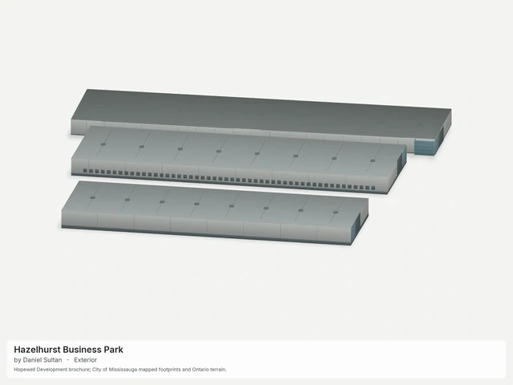
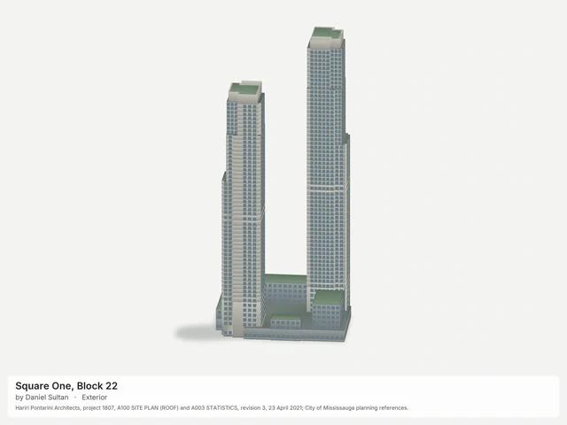
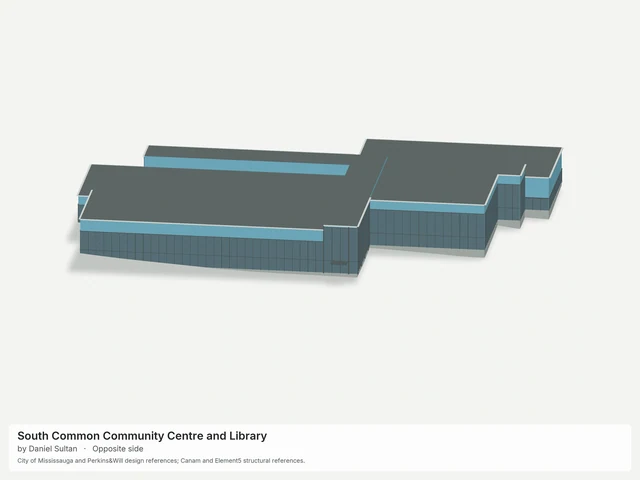
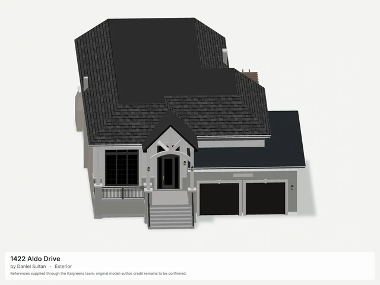
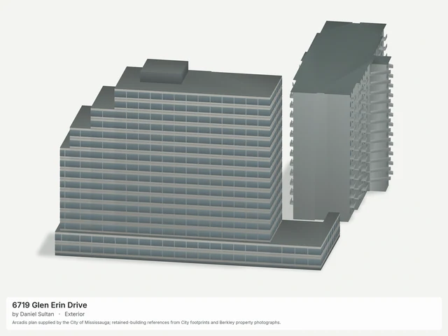
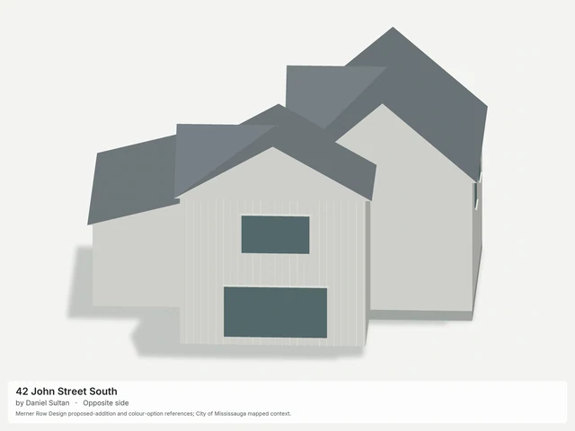

Downloads

Mississauga atlas
Explore the skyline, waterfront and neighbourhoods in one illustrated guide.
Downtown prints and film


Building booklets
Two exterior views, a neighbourhood map and the sources behind each model.

ClarksonHazelhurst Business Park
Read booklet Cooksville
CooksvilleSt Hilary’s Anglican Church
Read booklet Dixie and Applewood
Dixie and ApplewoodBurnhamthorpe Community Centre
Read booklet
DowntownSquare One, Block 22
Read booklet
Erin MillsSouth Common Community Centre and Library
Read booklet Lakeview
LakeviewSouth Banks / Lakeview Village
Read booklet
Lorne Park1422 Aldo Drive
Read booklet
Meadowvale6719 Glen Erin Drive
Read booklet Port Credit
Port Credit41 Bay Street
Read booklet
Port Credit42 John Street South
Read booklet Port Credit
Port Credit42 Peter Street South
Read booklet
Earlier atlases
First 56-page city atlas
Downtown skyline studies
Revised citywide cover
Citywide cover study
Waterfront and neighbourhood studies